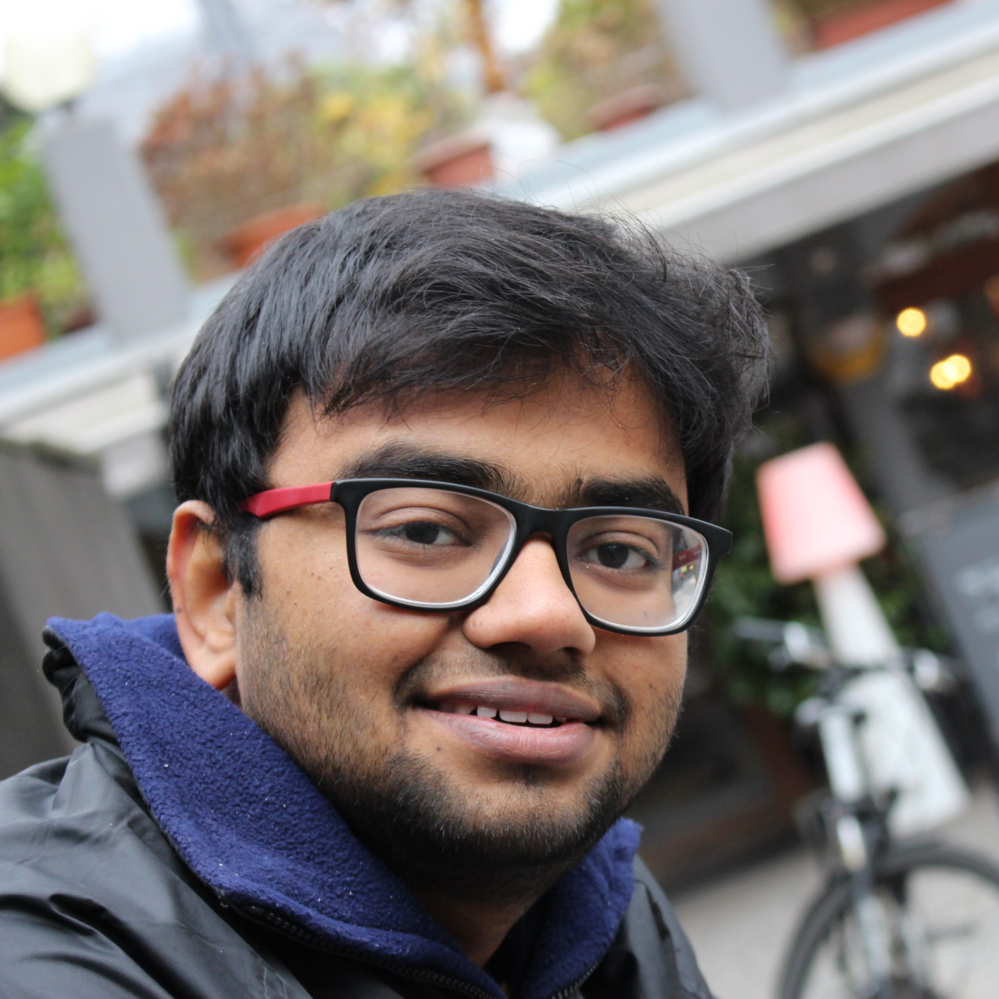

Sri Muthu Narayanan Balasubramanian
I've been a Masters student at Eindhoven University of Technology since August 2015, specializing in Embedded Systems.
I graduated with a Bachelors in Electrical and Electronics from College of Engineering Guindy - Anna University, in May 2013 and worked as a part of the On-Board Display ECU team at Caterpillar Inc. for 2 years. I am a huge fan of Python and enjoy building small autonomous robots in my free time.
I am also a Pianist and enjoy trekking ...
My Work Experience